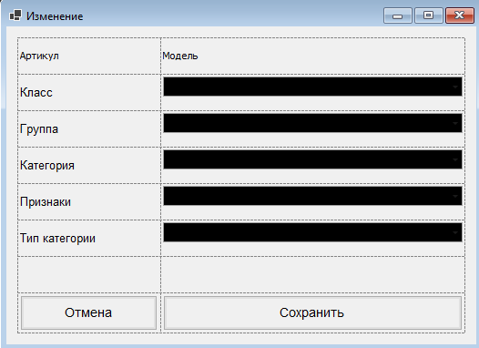

Изменение
Форма предназначена для редактирования динамических признаков выбранного набора
или его части.
В верхней части формы отображаются артикул и модель.
Ниже выбираются параметры классификации изделия.
Поля формы:
- Класс – класс изделия.
- Группа – группа изделия.
- Категория – категория изделия.
- Признаки – динамический признак.
- Тип категории – дополнительный параметр для некоторых записей.
Порядок работы:
- Проверьте артикул и модель в верхней части формы.
- Выберите нужную категорию и динамический признак.
- При необходимости укажите Тип категории.
- Нажмите "Сохранить" для применения изменений.
- Нажмите "Отмена", если изменения сохранять не требуется.
Особенности:
- Форма открывается из формы Изменение данных в матрице.
- При открытии форма автоматически подставляет текущую цепочку значений:
класс → группа → категория → признак.
- Поле "Тип категории" отображается не для всех записей, а только в отдельных случаях.
